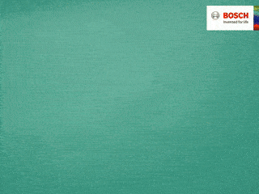
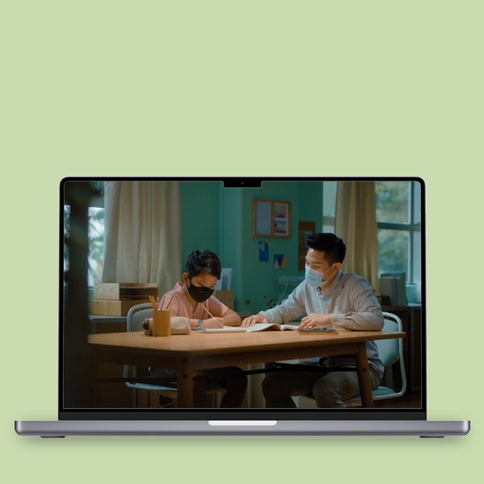

MULTIPLE CAMPAIGNS
2020-2021CREATIVE DIRECTION
Multi-region, digital and on-ground campaigns for the kitchen/household appliance brand, each an opportunity for creativity.
- 

From one-shot long takes, to stop-motion, to events and livestreams and many others, the team delivered with social-first thinking that is market relevant. Via GOODSTUPH.
- 


- © systemzero5